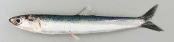
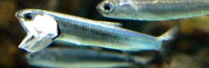
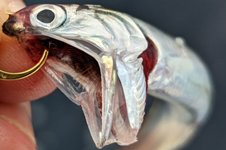
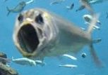

| 番号 | 問題 | 解答 |
|---|---|---|
| 1 | 大陸のまわりを縁取る水深200m程度の浅い海域を何というか。 | 大陸棚 |
| 2 | プランクトンが豊富で好漁場となっている1の中でも特に浅い部分を何というか。 | 浅堆(バンク) |
| 3 | プランクトンが繁殖し好漁場となる寒暖の海流がぶつかりあう海域を何というか。 | 潮目(潮境) |
| 4 | 海の中層水や深層水が表層に上昇してくる海水の流れを何というか。 | 湧昇流 |
| 5 | 10℃以上を好適水温とする暖海魚の例を５つ挙げよ。 | マグロ・カツオ・イワシ・ブリ・サバ |
| 6 | 10℃以下を好適水温とする寒海魚の例を５つ挙げよ。 | サケ・マス・タラ・ニシン・サンマ |
| 7 | 太平洋北西部漁場において、太平洋側で潮目を形成する暖流と寒流は何か。 | 日本海流(黒潮)と千島海流(親潮) |
| 8 | 太平洋北西部漁場において、日本海側で潮目を形成する暖流と寒流は何か。 | 対馬海流とリマン海流 |
| 9 | 日本海に存在し大正時代に日本海軍の測量艦によって測量されたことに由来して名付けられた浅堆は何か。 | 大和堆 |
| 10 | 太平洋北東部漁場において、潮目を形成する暖流と寒流は何か。 | アラスカ海流とカリフォルニア海流 |
| 11 | 太平洋北東部漁場において、サケの遡上で有名なカナダを流れる川は何か。 | フレーザー川 |
| 12 | 太平洋南東部漁場において、湧昇流を生じさせる海流と恒常風は何か。 | ペルー海流と貿易風 |
| 13 | 太平洋南東部漁場において捕獲され、フィッシュミールの原料となるカタクチイワシを何というか。 | アンチョビー |
| 14 | 太平洋南東部漁場で漁獲量の激減をもたらす自然現象は何か。 | エルニーニョ現象 |
| 15 | 14の現象を引き起こすとされる恒常風は何か。 | 貿易風 |
| 16 | 14の現象により海水温が平年よりも高くなるのは、東太平洋・西太平洋のどちらか。 | 東太平洋 |
| 17 | 14の現象とは逆の原理で発生する自然現象は何か。 | ラニーニャ現象 |
| 18 | 大西洋北西部漁場において、潮目を形成する暖流と寒流は何か。 | メキシコ湾流とラブラドル海流 |
| 19 | 18の潮目が付近で形成されるカナダ領の島は何か。 | ニューファンドランド島 |
| 20 | 19の島付近に存在する広大な浅堆は何か。 | グランドバンク |
| 21 | 大西洋北東部漁場において、潮目を形成する暖流と寒流は何か。 | 北大西洋海流と東グリーンランド海流 |
| 22 | 1970年代から水産資源の管理を徹底し、漁獲量の減少から回復した北欧の国はどこか。 | ノルウェー |
| 23 | 大西洋北東部漁場に存在する代表的な浅堆は、グレートフィッシャーバンクと何か。 | ドッガーバンク |
| 24 | 大西洋北西部漁場や大西洋北東部漁場で漁の中心となる魚を２つ挙げよ。 | タラ・ニシン |
| 25 | 人工的に孵化した稚魚を海に放し、成長したのちに再捕獲する漁業は何か。 | 栽培漁業 |



